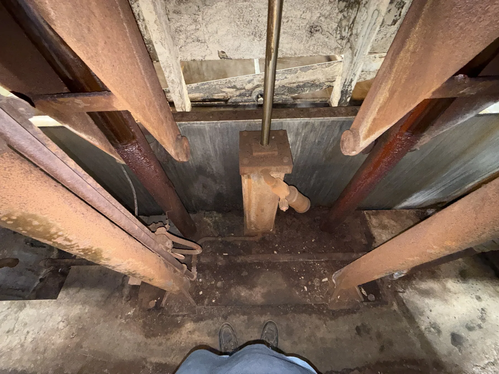

Pipe-Cleaning Agitation Machine
Built a full-scale CAD model of a large industrial cleaning machine from hand measurements taken directly off the equipment, with no existing engineering drawings to work from.
- Machine
- Industrial pipe-cleaning machine that rocks and agitates piping inside a cleaning bath
- Reference
- The physical machine only — measured by hand, no drawings
- Modeled
- The main machine structure at full scale
- My role
- Measurement, CAD modeling, assembly

Physical machine to full-scale model
Physical machine
A large, in-service industrial machine that holds piping and agitates it inside a cleaning bath.
Hand measurements
Dimensions taken directly off the equipment, working around a wet, corroded, live installation.
Full-scale CAD
The main structure rebuilt at full scale and assembled in CAD.
Modeling something nobody documented
The machine holds piping and rocks it to agitate the pipe inside a cleaning bath. It works, but it exists only as hardware — there were no engineering drawings to model from, so every dimension in the CAD model came from a measurement I took by hand off the actual machine.
That is a different exercise from modeling a part on a bench. The machine is large, much of it sits over or in a bath, and surfaces are corroded and painted over. You have to decide what to measure, what to derive from symmetry, and how to check yourself as you go, because a small error at one end of a frame becomes a visible error at the other.
The resulting model covers the main machine structure at full scale. The remaining major component is the front rack, which would hold the piping placed into the bath.
The machine, and the model
Photographs taken from three sides, alongside the CAD reconstruction built from them.
What I took from it
- Measurement strategy matters more than measurement count. Establishing a few reliable datums first made everything downstream consistent.
- Model as you measure. Building the CAD alongside the measuring exposed gaps while I was still standing at the machine, instead of after.
- Old equipment is rarely square. Deciding when to model the nominal design intent versus the as-built condition is a judgement call you have to make deliberately.